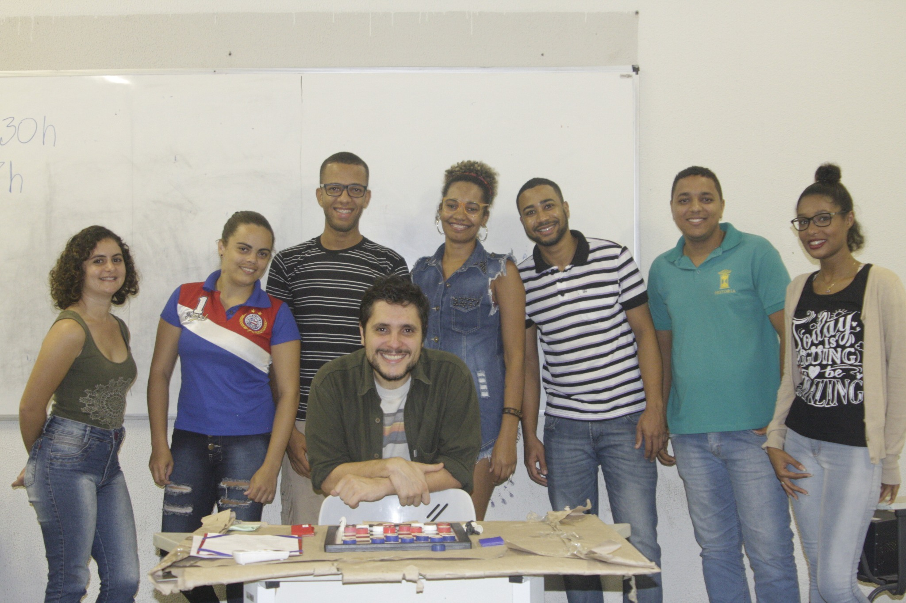
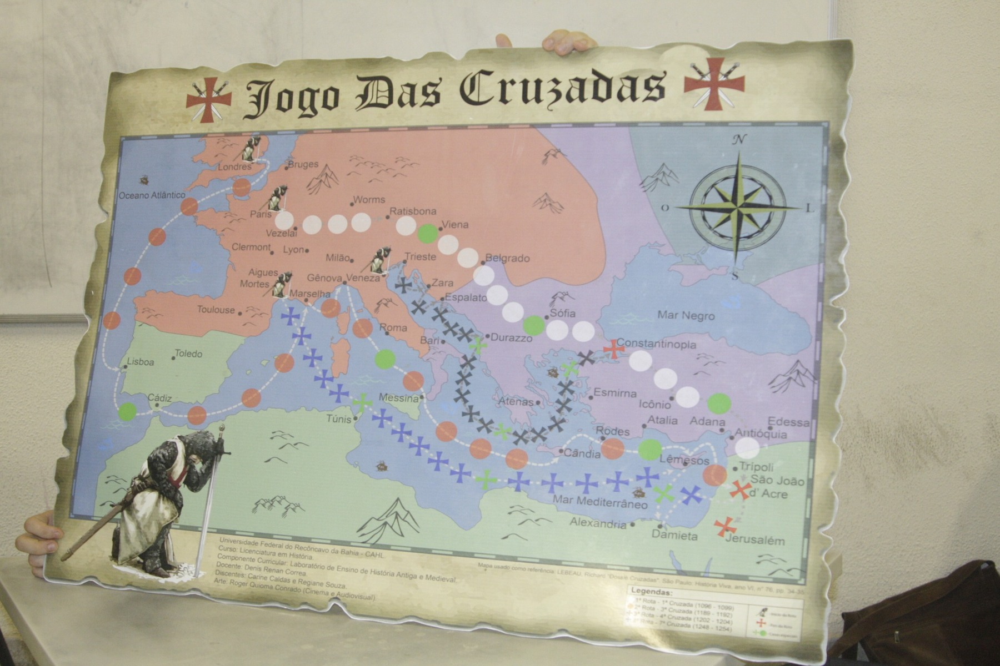
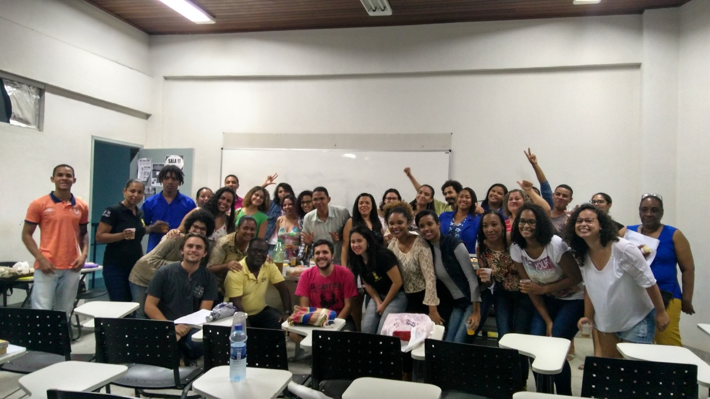

A República dos Atenienses
Aristóteles. Tradução de Dênis Renan Corrêa.

Memorial 20 anos · Perfil docente
História Antiga e Medieval

Trajetória no curso
Docente efetivo do Curso de História da UFRB desde 2012, Dênis Renan Corrêa atua nas áreas de História Antiga e Medieval. Em sua trajetória no curso, exerceu atividades de docência e pesquisa e também atuou como coordenador do curso e coordenador da área de História.
Seleção do professor
Dênis selecionou cinco trabalhos representativos de sua trajetória no período de atuação na UFRB. A relação mais ampla de livros vinculados ao docente permanece disponível na seção Livros, ao final desta página.
Aristóteles. Tradução de Dênis Renan Corrêa.
“Agonistic Intertextuality and Hypoleptic Discourse in Herodotus”, em Misinformation, Disinformation, and Propaganda in Greek Historiography.
“Problemas do tempo na historiografia grega”, em Problemas de historiografia antiga e moderna: estudos e discussões em tempos de pandemia, p. 17–48.
“Historiography, rhetoric, and the controversies about Solon in the Fourth Century”. Histos, n. 13, p. 129–145.
“Balanço e apontamentos sobre a fortuna crítica da BNCC”. Revista do Lhiste, v. 3, n. 4, jan./jun. 2016.
Extensão

Projeto de extensão indicado por Dênis como uma das experiências de sua trajetória no curso, desenvolvido entre 2013 e 2017.
A imagem enviada pelo docente registra o “Jogo das Cruzadas”, material elaborado no contexto do projeto e relacionado ao ensino de História Antiga e Medieval.
Vida docente

Depoimento